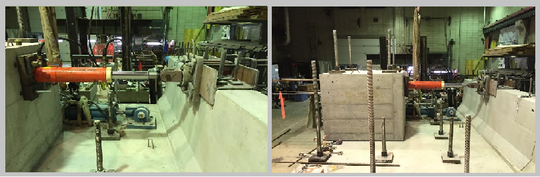
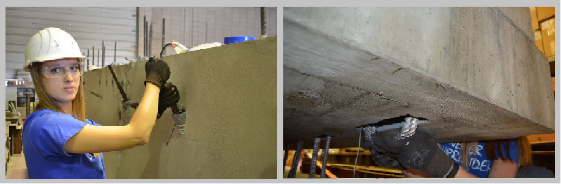
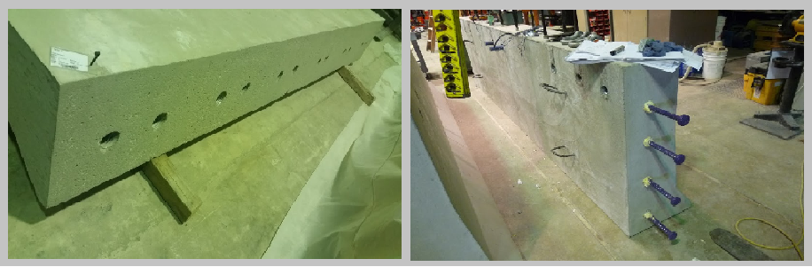
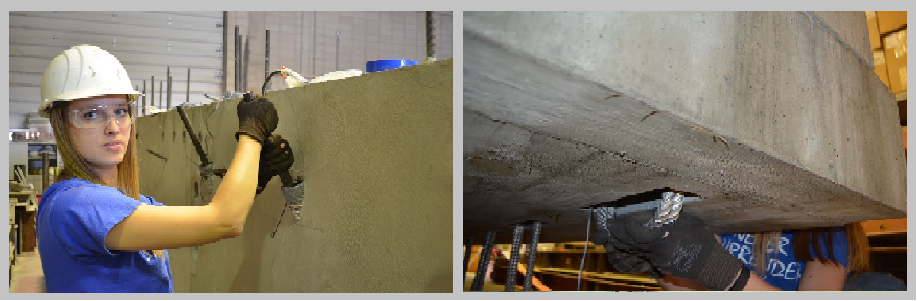
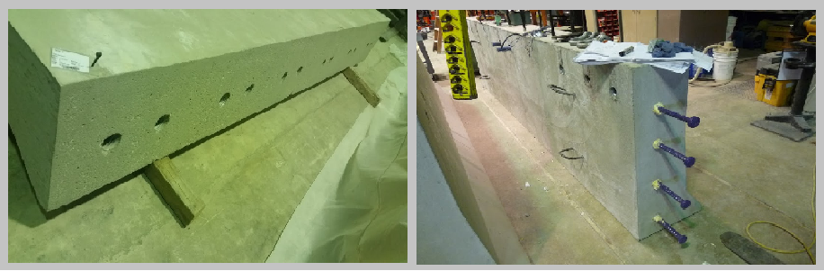
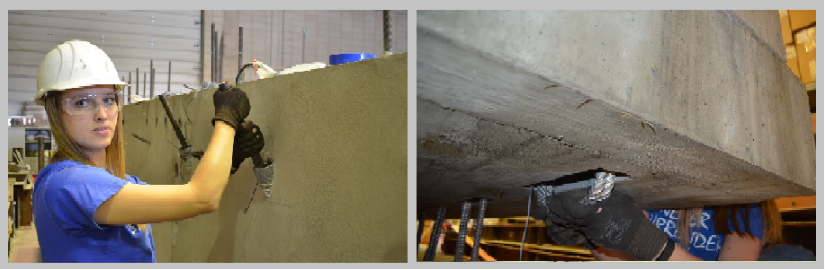
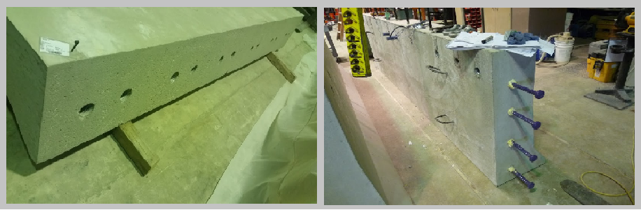

 





Introduction
With bridge systems, one very important component of safety is the bridge barrier or the bridge railing. The primary purpose of bridge barriers is to contain, redirect, and shield vehicles from off-road bridge accidents. Bridge railings are generally classified as a longitudinal barrier. The difference between roadside longitudinal barriers and bridge railings is that bridge barriers are physically attached to the bridge deck and therefore they don’t usually deflect when hit by a vehicle. Cast-in-place barriers are typically used and are proven that they meet the structural requirements needed to meet this purpose. However, in bridge construction, the use of prefabricated elements and systems has been gaining interest and attention. Through the use of prefabricated elements, bridges can be constructed or repaired faster with less disruption to traffic and with a safer work zone environment. Another benefit of prefabricated systems is the improved product quality of a system precast in a controlled setting. The use of precast concrete barrier wall systems for bridge decks is still a relatively new development that needs more attention and research.
Accelarated Bridge Construction
The purpose of accelerated bridge construction (ABC) is to minimize impact to travelling public that occur due to onsite construction. ABC improves the on site construction and the total project delivery time. Through the use of prefabricated elements and systems the material quality and product durability is also improved. With ABC, the bridge components are built outside of the traffic area and then transformed to the job site where they can be installed quickly. This will help reduce the onsite construction time, weather-related delays, and impacts to traffic. Prefabricated concrete bridge barriers, instead of cast-in-place barriers, are investigated in this project so that barrier can also be installed in an accelarated manner in ABC projects.
Test Video

|
Links to Other Projects
- Accelerated Bridge Construction (ABC) for Seismic Regions
- NEESR-CR: Rocking Wall Project for Seismic Resilient Structures
- Improving Accuracy of the Camber Predictions for Precast Prestressed Concrete Bridge Girders
- Research on UHPC materials and its use in Structural Design
- Development of LRFD procedures for bridge foundations consisted of drilled shafts
- Development of LRFD procedures for bridge foundations consisted of driven piles in Iowa